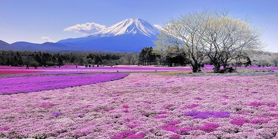
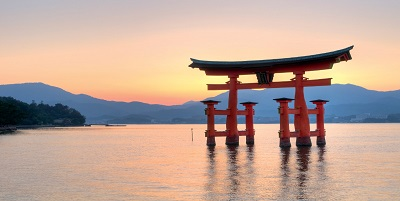
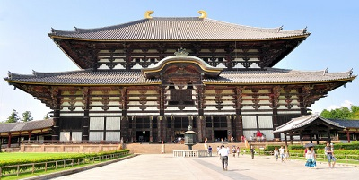

Tour Itinerary
Day 01 : Arrival - Tokyo Arrive in Japan - The Land of Rising Sun. Upon reaching Narita or Haneda Airport, transfer to the hotel and check-in. Tokyo is one of the most populous cities in the world and offers an unlimited choice of entertainment, shopping, and dining experience. The city also has plenty of gardens, museums, and temples. Though Tokyo is constantly changing to keep up with shifting fads, the traditions have been followed for thousands of years. Enjoy your evening at leisure and have dinner at a restaurant of your choice (on your own) before returning to the hotel for an overnight stay. |
Day 02 : Full Day Tokyo City Tour After breakfast, board the bus to Hamamatsu Cho Bus Terminal. The tour begins with a visit to Tokyo Tower. Attend an authentic tea ceremony and view nature from every angle at the garden of eight views, which has carefully preserved the beautiful Edo ambience throughout the centuries then enjoy a Japanese style lunch with both vegetarian and non-vegetarian options. Visit the Imperial Palace Plaza, Asakusa Kannon, and the Niju-bashi Bridge. Take a Sumida River Cruise and head to Nakamise and Ginza for some shopping. The tour ends at Marunouchi South Exit station in the evening. Head back to Hamamatsucho Bus Terminal and spend the night at the hotel. |
Day 03 : Tokyo Tea Ceremony and Shopping Breakfast at hotel. After Breakfast, Proceed to enjoy the Tea Ceremony Experience with English speaking guide in Tokyo. The Japanese tea ceremony is called Chanoyu, Sado or simply Ocha in Japanese. It is a choreographic ritual of preparing and serving Japanese green tea, called Matcha, together with traditional Japanese sweets to balance with the bitter taste of the tea.The whole process is not about drinking tea, but is about aesthetics, preparing a bowl of tea from one's heart.Have lunch at any restaurant or cafe of your choice (on your own). You have the rest of the day free for sightseeing, exploring, shopping, or relaxing. Later, make your way back to the hotel and get a good night sleep. |
Day 04 : Visit to Mt. Fuji Check out from the hotel after breakfast and depart from Hamamatsu Cho Bus Terminal and head to Mount Fuji by bus. First, visit the Fuji Visitor Center and then proceed to Mount Fuji 5th Station; a scenic spot with restaurants and shops. Enjoy a boat cruise on Lake Ashi before relishing an authentic Japanese lunch. Try the Komagatake Ropeway; a cable car that provides exquisite views of not only Mt. Fuji but also of the Southern Alps, Mt. Ontake, Mt. Norikura, and the Northern Alps. Depart from Hakone to Odawara by bus. Upon arrival, check in to the hotel at Hakone Ryokan. Head out for dinner (on your own)and return for an overnight stay at the hotel. |
Day 05 : Visit the city of history - Kyoto Enjoy a scrumptious breakfast at the hotel. Check-out after which you make your way to Odawara station. Catch the bullet train heading to Kyoto; the journey takes approximately 2 and a half hours. Arrive at Kyoto and check in at the hotel. Proceed for the Kyoto Night Tour in the evening. You will be visiting Gion Corner - a unique theater showcasing various performing arts. Take a stroll around the Gion Historical Preservation District and enjoy a tea ceremony and dinner at Yoshi-ima Ryokan. The tour ends at the listed hotels where you can retire for the night. |
Day 06 : Explore Kyoto in a Kimono After enjoying a hearty breakfast at the hotel, head to Saganokan Shijo Main Store and get dressed in a Kimono which is a Japanese traditional garment that comes in a variety of colors and designs. Pick the one you like and get dressed for a 30-minute commemorative photo shoot. Post which you proceed for sightseeing, while still wearing the kimono. Visit temples, shrines, and more before returning. Change back into your clothes and make your way back to the hotel for an overnight stay. |
Day 07 : Tour of Kyoto & Nara Have breakfast at the hotel. Depart from Kyoto Station Hachijo Exit by bus on a full day excursion to Kyoto and Nara and visit popular places of interest, starting with Kinkaku-Ji Temple, a Zen temple with two floors covered in gold leaf. Visit Nijo Castle, a flatland castle that is a registered as a National Historic Site. Enjoy a Japanese lunch and proceed for Nara by bus. Here, you visit one of Japan's most famous temples - Todaiji Temple along with other spots like Nara Deer Park, Kasuga Taisha Shrine, and Nara Nagomikan. Return to Kyoto station, head to hotel on your own and enjoy your dinner (on your own). Overnight stay at the hotel. |
Day 08 : Kyoto Departure This day marks the end of your wonderful vacation to Japan. Post breakfast, Head to Osaka station on your own. Board your transfer to Kansai Airport for your flight back home. |
Captures |
|    |